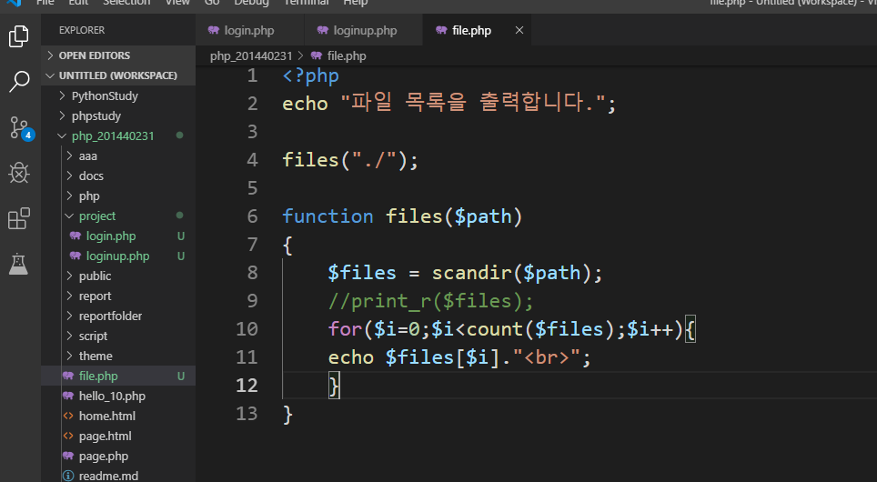

-세션을 이용해 출력하기 위한 코드 login.php 파일을 생성해 만든다.
-login.php 실행하면 출력되는 결과
-loginup.php 파일 만들기
-loginup 파일에서 다시 login 으로 돌아오면 로그인 되었다는 것이고 대숙이가 뜨게 된다.
-파일명들 모두 출력하기

-모든 파일 출력된다.
-if문을 이용해서 원하는 파일명만 출력하게 만든다.